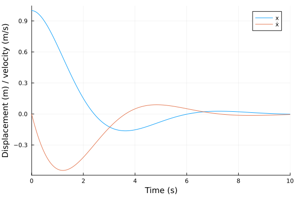
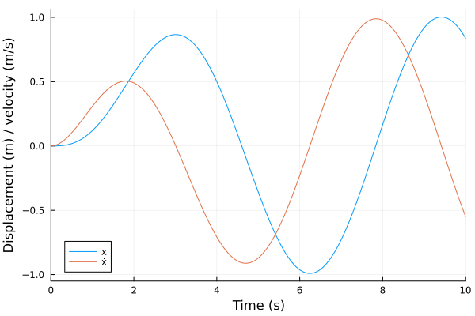
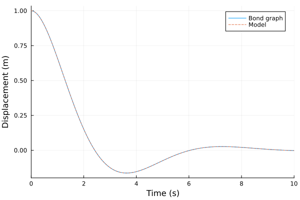
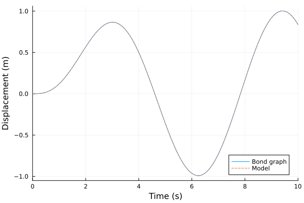

Harmonic Oscillator
The source files for all examples can be found in /examples.
Introduction
The harmonic oscillator is a classic example of a dynamic system with oscillatory behaviour. In the mechanical domain it is a mass on a spring and a damper, driven by an external force, as in the free-body diagram below:

Mass-spring-damper model
We assume a rigid mass $m$ moving along one axis, a linear spring of stiffness $k$ and a viscous damper with coefficient $c$, both massless. The position $x$ is measured from the static equilibrium, positive in the direction of the force $F(t)$, so gravity is balanced by the spring's preload and drops out.
On the mass act the external force $F(t)$, the spring force $-k\,x$ and the damper force $-c\,\dot{x}$. Newton's 2nd law, $m\,\ddot{x} = F(t) - c\,\dot{x} - k\,x$, gives the governing equation:
\[m\,\ddot{x} + c\,\dot{x} + k\,x = F(t).\]
See also Harmonic oscillator.
Bond Graph Model
The mass, spring and damper all move with the same velocity $\dot{x}$, so their bonds meet at a 1-junction, together with the force source:

Karnopp, Margolis & Rosenberg (2012) model a mass as an inertia I:m with momentum $p = m\,\dot{x}$ and $\dot{p} = F$, a spring as a compliance C:1/k with displacement $q = x$ and effort $k\,q$, and a dashpot as a resistance R:c (§3.1, pp. 38–47). A mechanical 1-junction is a force balance at a common velocity (§3.3, pp. 58, 61). The effort source Se:F(t) is the external force.
Preliminary Steps
In this example we first build and simulate the bond graph model of the oscillator, unforced and forced. Then we simulate the equation derived above as a plain ModelingToolkit model and compare the results.
We import the bond-graph toolkit to model the system and OrdinaryDiffEqTsit5 to solve the resulting ODE. We also import ModelingToolkit's independent variable t and derivative D, for the forcing term and the reference model.
using BondGraphToolkit
using BondGraphToolkit.ModelingToolkit: t_nounits as t, D_nounits as D
using OrdinaryDiffEqTsit5
using PlotsSystem Element Definitions
Mass, Spring and Damper are the mechanical shorthands for Inertia (I = m), Compliance (C = 1/k) and Resistance (R = c):
@named mass = Mass(m = 1.0) # (kg) Mass
@named spring = Spring(k = 1.0) # (N/m) Spring stiffness
@named damper = Damper(c = 1.0) # (N⋅s/m) Viscous damping coefficient\[ \begin{align} e\left( t \right) &= \mathtt{power.e}\left( t \right) \\ \mathtt{pout.e}\left( t \right) &= \mathtt{power.e}\left( t \right) \\ f\left( t \right) &= - \mathtt{pout.f}\left( t \right) + \mathtt{power.f}\left( t \right) \\ e\left( t \right) &= R ~ f\left( t \right) \end{align} \]
The unforced case has a zero force, $F(t) = 0$:
@named force = Se(0.0) # (N) External force\[ \begin{align} e\left( t \right) &= \mathtt{power.e}\left( t \right) \\ \mathtt{pout.e}\left( t \right) &= \mathtt{power.e}\left( t \right) \\ f\left( t \right) &= - \mathtt{pout.f}\left( t \right) + \mathtt{power.f}\left( t \right) \\ e\left( t \right) &= 0 \end{align} \]
Model Construction
A single 1-junction holds the whole model. Following Karnopp's usual orientation (§3.1, pp. 39, 42, 49), the source's bond points into the junction (force => :pout, positive) and the bonds of the passive elements point out of it, towards the elements (a bare member x). The junction then states that all four bonds share the velocity and that $F - \dot{p} - c\,\dot{x} - k\,q = 0$.
@named model = Junction1(force => :pout, mass, damper, spring)\[ \begin{align} 0 &= \mathrm{connect}\left( force_{+}pout, core_{+}p1 \right) \\ 0 &= \mathrm{connect}\left( mass_{+}power, core_{+}p2 \right) \\ 0 &= \mathrm{connect}\left( damper_{+}power, core_{+}p3 \right) \\ 0 &= \mathrm{connect}\left( spring_{+}power, core_{+}p4 \right) \\ - \mathtt{core.p2.f}\left( t \right) &= \mathtt{core.p1.f}\left( t \right) \\ - \mathtt{core.p3.f}\left( t \right) &= \mathtt{core.p1.f}\left( t \right) \\ - \mathtt{core.p4.f}\left( t \right) &= \mathtt{core.p1.f}\left( t \right) \\ 0 &= \mathtt{core.p1.e}\left( t \right) - \mathtt{core.p2.e}\left( t \right) - \mathtt{core.p3.e}\left( t \right) - \mathtt{core.p4.e}\left( t \right) \\ \mathtt{force.e}\left( t \right) &= \mathtt{force.power.e}\left( t \right) \\ \mathtt{force.pout.e}\left( t \right) &= \mathtt{force.power.e}\left( t \right) \\ \mathtt{force.f}\left( t \right) &= - \mathtt{force.pout.f}\left( t \right) + \mathtt{force.power.f}\left( t \right) \\ \mathtt{force.e}\left( t \right) &= 0 \\ \frac{\mathrm{d}\mathtt{mass.p}\left( t \right)}{\mathrm{d}t} &= \mathtt{mass.e}\left( t \right) \\ \mathtt{mass.e}\left( t \right) &= \mathtt{mass.power.e}\left( t \right) \\ \mathtt{mass.pout.e}\left( t \right) &= \mathtt{mass.power.e}\left( t \right) \\ \mathtt{mass.f}\left( t \right) &= - \mathtt{mass.pout.f}\left( t \right) + \mathtt{mass.power.f}\left( t \right) \\ \mathtt{mass.f}\left( t \right) &= \frac{\mathtt{mass.p}\left( t \right)}{\mathtt{mass.I}} \\ \mathtt{damper.e}\left( t \right) &= \mathtt{damper.power.e}\left( t \right) \\ \mathtt{damper.pout.e}\left( t \right) &= \mathtt{damper.power.e}\left( t \right) \\ \mathtt{damper.f}\left( t \right) &= - \mathtt{damper.pout.f}\left( t \right) + \mathtt{damper.power.f}\left( t \right) \\ \mathtt{damper.e}\left( t \right) &= \mathtt{damper.R} ~ \mathtt{damper.f}\left( t \right) \\ \frac{\mathrm{d}\mathtt{spring.q}\left( t \right)}{\mathrm{d}t} &= \mathtt{spring.f}\left( t \right) \\ \mathtt{spring.e}\left( t \right) &= \mathtt{spring.power.e}\left( t \right) \\ \mathtt{spring.pout.e}\left( t \right) &= \mathtt{spring.power.e}\left( t \right) \\ \mathtt{spring.f}\left( t \right) &= - \mathtt{spring.pout.f}\left( t \right) + \mathtt{spring.power.f}\left( t \right) \\ \mathtt{spring.e}\left( t \right) &= \frac{\mathtt{spring.q}\left( t \right)}{\mathtt{spring.C}} \end{align} \]
Analysing the model
mtkcompile reduces the model to its states: the mass's momentum and the spring's displacement.
sys = mtkcompile(model)\[ \begin{align} \frac{\mathrm{d}\mathtt{spring.q}\left( t \right)}{\mathrm{d}t} &= \mathtt{damper.f}\left( t \right) \\ \frac{\mathrm{d}\mathtt{mass.p}\left( t \right)}{\mathrm{d}t} &= - \mathtt{core.p3.e}\left( t \right) - \mathtt{core.p4.e}\left( t \right) \end{align} \]
Print system states
unknowns(sys)2-element Vector{SymbolicUtils.BasicSymbolicImpl.var"typeof(BasicSymbolicImpl)"{SymReal}}:
spring₊q(t)
mass₊p(t)Print system parameters
parameters(sys)3-element Vector{SymbolicUtils.BasicSymbolicImpl.var"typeof(BasicSymbolicImpl)"{SymReal}}:
mass₊I
damper₊R
spring₊CPrint the system's equations in terms of the states
full_equations(sys)\[ \begin{align} \frac{\mathrm{d}\mathtt{spring.q}\left( t \right)}{\mathrm{d}t} &= \frac{\mathtt{mass.p}\left( t \right)}{\mathtt{mass.I}} \\ \frac{\mathrm{d}\mathtt{mass.p}\left( t \right)}{\mathrm{d}t} &= \frac{ - \mathtt{spring.q}\left( t \right)}{\mathtt{spring.C}} + \frac{ - \mathtt{damper.R} ~ \mathtt{mass.p}\left( t \right)}{\mathtt{mass.I}} \end{align} \]
bgequations gives the same equations in terms of the states. Renaming the variables and parameters to the symbols of the hand derivation makes them easier to read:
@variables x(t) p(t)
@parameters m c k
eqs = bgequations(model; rename = Dict(model.spring.q => x, model.mass.p => p,
model.mass.I => m, model.damper.R => c,
model.spring.C => 1 / k))
latexify(eqs)\begin{align} \frac{\mathrm{d}x\left( t \right)}{\mathrm{d}t} &= \frac{p\left( t \right)}{m} \ \frac{\mathrm{d}p\left( t \right)}{\mathrm{d}t} &= \frac{ - c ~ p\left( t \right)}{m} - k ~ x\left( t \right) \end{align}
The first equation says the spring's displacement changes with the mass's velocity, $\dot{x} = p/m$. The second is the 1-junction's force balance, $\dot{p} = F - c\,p/m - k\,x$, here with $F = 0$. Substituting $p = m\,\dot{x}$ gives $m\,\ddot{x} + c\,\dot{x} + k\,x = F(t)$, the equation derived by hand.
System Simulations
Bond graph model
Define the simulation time
tspan = (0.0, 10.0)(0.0, 10.0)The unforced oscillator starts from rest with a unit spring displacement, $x(0) = 1$. The initial values are passed to the ODEProblem as for any ModelingToolkit model.
prob = ODEProblem(sys, [sys.spring.q => 1.0], tspan)ODEProblem with uType Vector{Float64} and tType Float64. In-place: true
Initialization status: FULLY_DETERMINED
Non-trivial mass matrix: false
timespan: (0.0, 10.0)
u0: 2-element Vector{Float64}:
1.0
0.0Use solve to simulate the system.
sol = solve(prob, Tsit5(), reltol = 1e-10, abstol = 1e-10)
plot(sol, idxs = [model.spring.q, model.mass.f], labels = ["x" "ẋ"],
xlabel = "Time (s)", ylabel = "Displacement (m) / velocity (m/s)")
For the forced case, the force source becomes $F(t) = \sin(t)$, built from the same elements. The oscillator starts at rest at $x(0) = 0$, the spring's default.
@named force_sin = Se(sin(t)) # (N) External force
@named forced = Junction1(force_sin => :pout, mass, damper, spring)
forced_sol = solve(ODEProblem(mtkcompile(forced), [], tspan), Tsit5(),
reltol = 1e-10, abstol = 1e-10)
plot(forced_sol, idxs = [forced.spring.q, forced.mass.f], labels = ["x" "ẋ"],
xlabel = "Time (s)", ylabel = "Displacement (m) / velocity (m/s)")
Mass-spring-damper model
The reference model is the equation derived by hand, written as two first-order equations in the position $x$ and the velocity $v = \dot{x}$:
@variables v(t)
mᵥ = 1.0 # (kg) Mass
kᵥ = 1.0 # (N/m) Spring stiffness
cᵥ = 1.0 # (N⋅s/m) Damping coefficient
oscillator_eqs(F) = [D(x) ~ v, mᵥ * D(v) ~ F - cᵥ * v - kᵥ * x]oscillator_eqs (generic function with 1 method)One System per case: the unforced one starts at $x(0) = 1$, the forced one at rest at the origin.
@named ref = System(oscillator_eqs(0.0), t)
ref_sol = solve(ODEProblem(mtkcompile(ref), [x => 1.0, v => 0.0], tspan), Tsit5(),
reltol = 1e-10, abstol = 1e-10)
@named ref_forced = System(oscillator_eqs(sin(t)), t)
ref_forced_sol = solve(ODEProblem(mtkcompile(ref_forced), [x => 0.0, v => 0.0], tspan),
Tsit5(), reltol = 1e-10, abstol = 1e-10);Compare models
We compare the bond graph's spring displacement with the position $x$ of the reference model.
Unforced case
plot(sol, idxs = model.spring.q, label = "Bond graph", ylabel = "Displacement (m)")
plot!(ref_sol, idxs = x, label = "Model", xlabel = "Time (s)", linestyle = :dash)
Forced case
plot(forced_sol, idxs = forced.spring.q, label = "Bond graph", ylabel = "Displacement (m)")
plot!(ref_forced_sol, idxs = x, label = "Model", xlabel = "Time (s)", linestyle = :dash)
The largest difference between the two models on a common time grid, over the displacement and the velocity, for both cases:
tgrid = range(tspan..., length = 1001)
maxdiff(bg, m, ref) = maximum(maximum(abs.(bg(tgrid; idxs = a) .- ref(tgrid; idxs = b)))
for (a, b) in [m.spring.q => x, m.mass.f => v])
maxdiff(sol, model, ref_sol), maxdiff(forced_sol, forced, ref_forced_sol)(0.0, 0.0)The bond graph model reproduces the hand-derived dynamics of the harmonic oscillator.
This page was generated using Literate.jl.